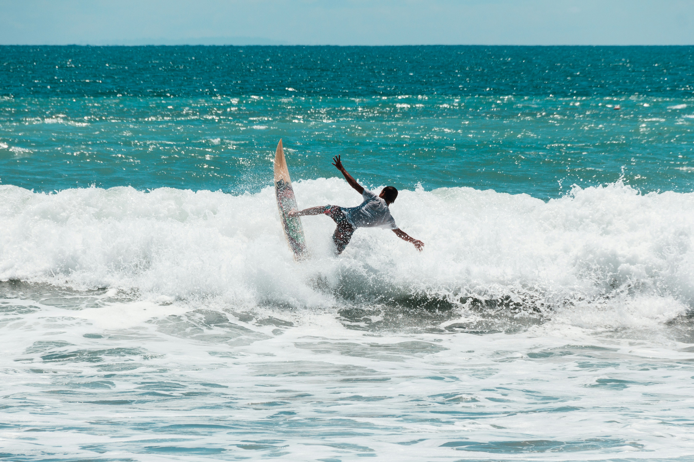
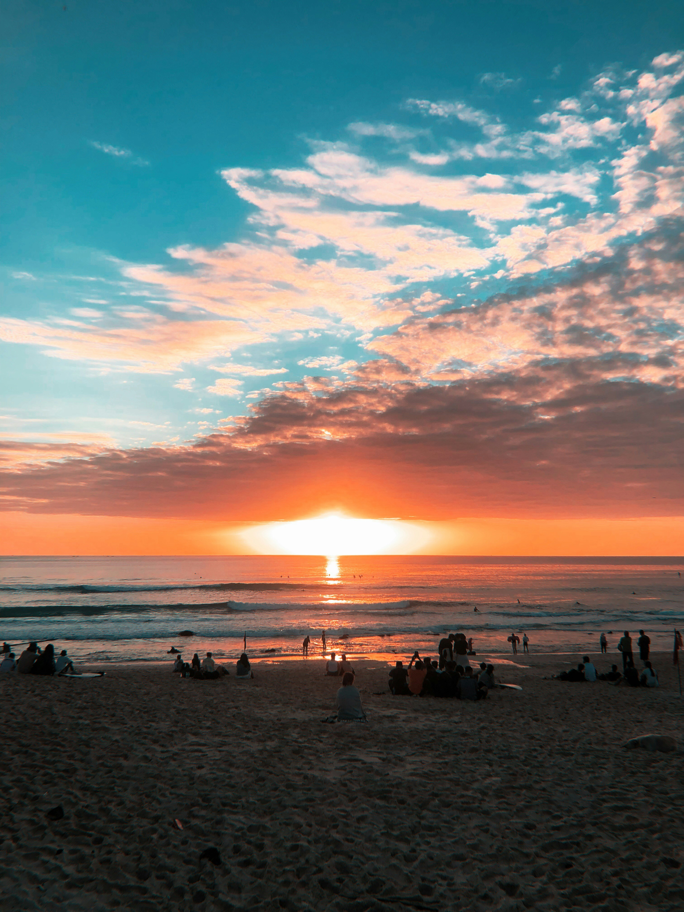
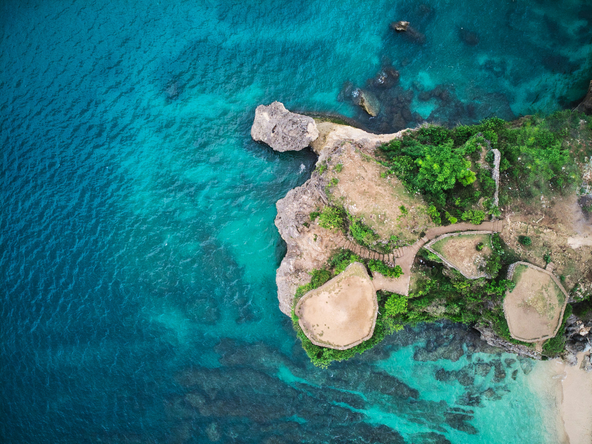

Pantai Kuta adalah destinasi terkenal di Bali dengan pasir putih, ombak besar untuk berselancar, dan pemandangan matahari terbenam yang indah. Dikelilingi oleh barisan pohon kelapa, pantai ini menarik peselancar dari seluruh dunia. Di sepanjang pantai terdapat berbagai fasilitas wisata seperti hotel, restoran, bar, dan toko suvenir. Namun, karena popularitasnya, pantai ini bisa menjadi cukup ramai terutama pada musim liburan.




